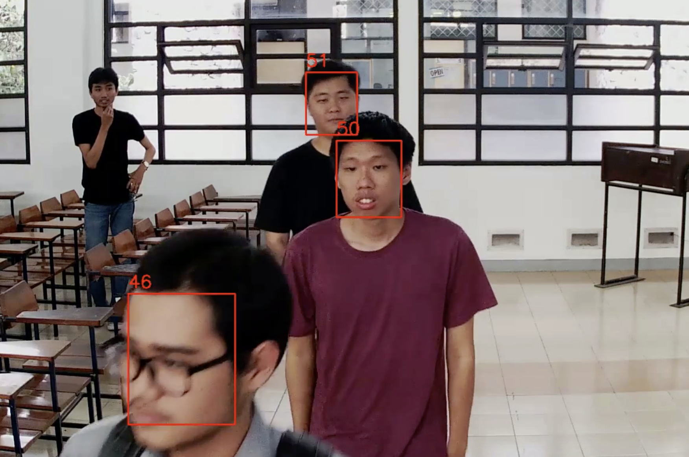
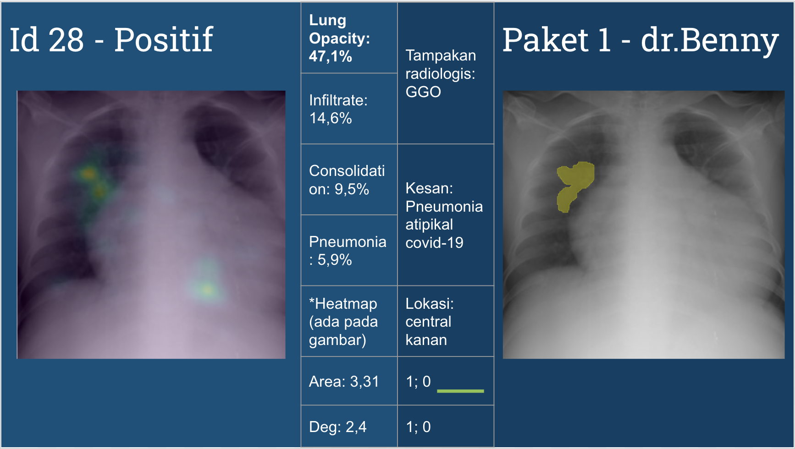
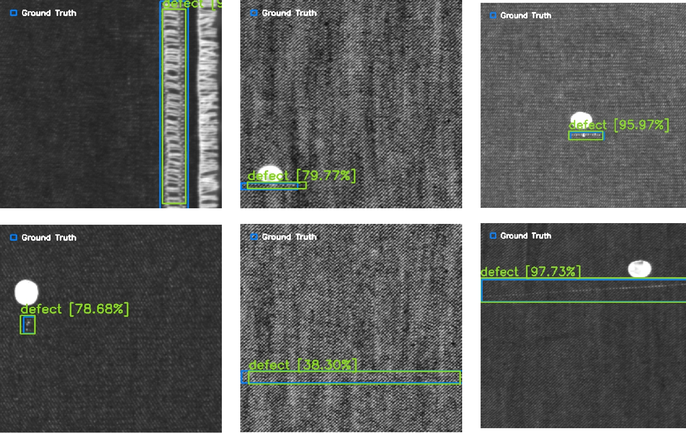
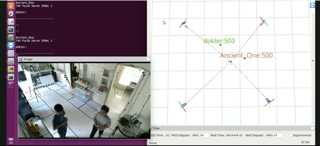
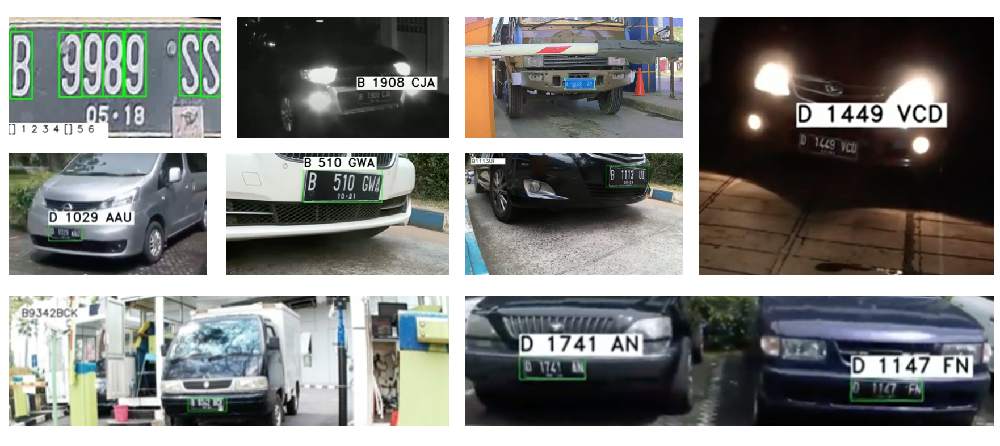
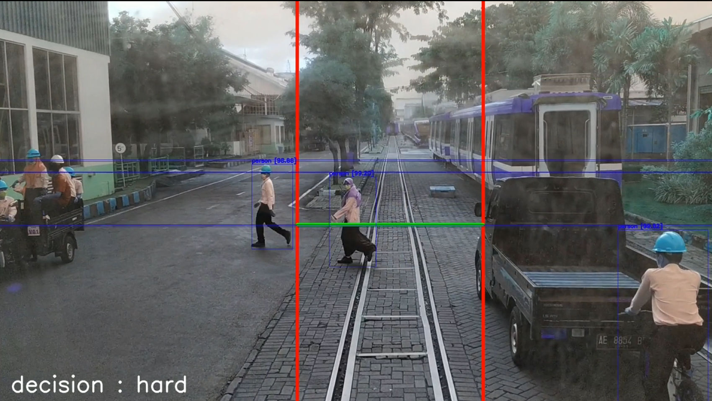

AI/ML Engineer · Computer Vision Specialist
AI Engineer with 7+ years of experience in Machine Learning and Computer Vision, holding an MSc in Artificial Intelligence (with Distinction) from the University of Southampton. Experienced in developing and deploying deep learning solutions, with a strong focus on computer vision using PyTorch. Proven track record in developing and deploying end-to-end AI pipelines, medical imaging solutions, and large-scale computer vision systems.
I'm an AI/ML engineer from Indonesia specialising in computer vision. I started my career in 2017 at riset.ai, where I grew from a deep learning engineer to leading a team building industrial and surveillance CV systems.
In 2024, I completed my MSc in Artificial Intelligence at the University of Southampton (UK) with Distinction, funded by the prestigious LPDP scholarship (Indonesia Endowment Fund for Education).
Currently, I work remotely as an AI/ML Engineer at Boon AI (San Mateo, CA), developing computer vision models for automated construction take-offs.

Built and improved an Indonesian face recognition system, increasing accuracy from 80% to 95%. Real-time face detection and identification from video feeds.

Developed medical imaging models (U-Net, DenseNet) for COVID-19 detection and lung segmentation from X-rays. Validated with medical professionals for radiological accuracy.

Designed a computer vision system installed on inspection machines to automatically detect and classify types of fabric defects in real-time production environments.

Built a working prototype for automatic customer purchase tracking using multiple 3D cameras, enabling checkout-free shopping experiences.

Developed an end-to-end ALPR pipeline achieving 95% accuracy using CCTV camera feeds. Deployed for real-world traffic monitoring and vehicle identification.

Built the perception system for an autonomous tram — combining rail detection, object detection, and depth estimation deployed on Jetson AGX Xavier. Registered as copyright EC00202213494 (2022) with the Indonesian Intellectual Property Office.
Developed CV models for automated take-off, specialising in high-precision material quantification from construction blueprints to automate manual estimation.
ORCID: 0000-0003-3734-5136
ITB Press — ISBN 978-623-297-326-8
itbpress.idProsiding Use Cases Artificial Intelligence Indonesia: Embracing Collaboration for Research and Industrial Innovation in AI
DOI: 10.55981/brin.668.c534IC3INA 2022 — International Conference on Computer, Control, Informatics and its Applications
DOI: 10.1145/3575882.3575888Pangkalan Data Kekayaan Intelektual
Pangkalan Data Kekayaan Intelektual
TENCON 2018 — IEEE Region 10 Conference
DOI: 10.1109/TENCON.2018.8650453International Journal of Advanced Computer Science and Applications (IJACSA)
DOI: 10.14569/IJACSA.2018.091042With Distinction
University of Southampton — United Kingdom
2024 – 2025
LPDP ScholarshipInstitut Teknologi Bandung — Indonesia
2013 – 2017